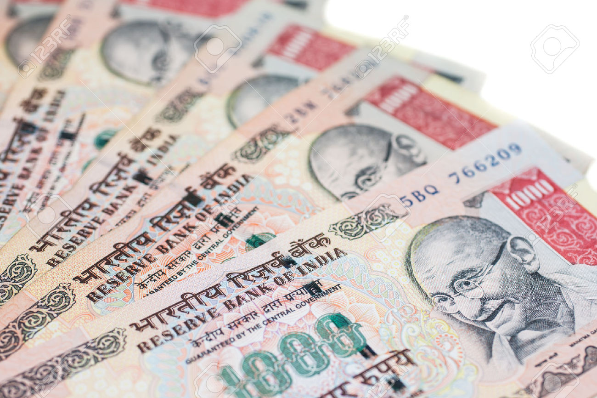

Currency notes made of cotton
- Did You Ever Know that Indian Notes which you were all time thinking to be made of paper were actually made from COTTON and LINEN
- In India, Currency paper is composed of cotton and cotton rag. Technically, It is not a paper but a cloth with look and feel of paper.
- The exact composition of the paper/cloth is classified, as is the formula for the ink.
- The ink and paper combine to create a distinct texture, particularly as the currency is circulated.

Indian currency
- The paper and the ink alone have no effect on the value of the note until post print.
- The Reserve Bank, in consultation with Government of India, has decided to introduce one billion pieces of INR 10 banknotes on plastic substrate on trial basis.
- Most banknotes are made of heavy paper, sometimes mixed with linen, cotton, or other textile fibres. Generally, the paper used is different from ordinary paper: it is much more resilient, resists wear and tear, and also does not contain the usual agents that make ordinary paper glow slightly under ultraviolet light.
Cotton currency